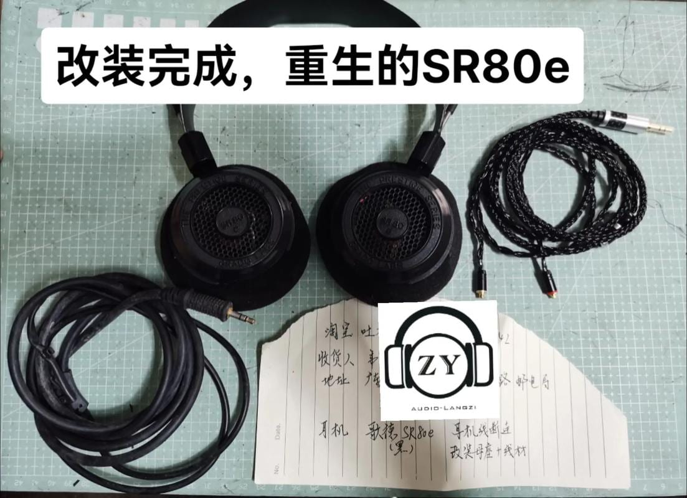

歌德 SR80e

热情洋溢的美式开放耳机，人声感染力强
客观评测
SR80e 是歌德 Prestige 系列的中坚型号，采用 44mm 动圈单元与开放式腔体，频响 20Hz–20kHz，阻抗 32Ω、灵敏度约 99.8dB，属极易驱动的头戴耳机。实测中频醇厚、人声贴耳且富有情感，高频具有明亮的光泽感，瞬态反应迅速；低频量感适中、质感大于下潜，单元背面通透设计使声音开扬不闷。双边出线、海绵耳垫与朴素做工延续了歌德数十年不变的家族风格。
主观点评
SR80e 是典型的“歌德声”：热情、直接、充满活力，听摇滚、爵士和人声时那种扑面而来的感染力，让许多更贵的耳机都自愧不如。它做工粗犷、佩戴随意，海绵垫会掉屑，外观也谈不上精致——但一旦按下播放键，这些都变得不重要。对追求音乐味胜过参数的烧友来说，SR80e 是千元内难以绕开的美式浪漫，也是歌德家族最亲民的入场券。
优点与不足
- 中频醇厚、人声贴耳，摇滚与爵士感染力十足
- 32Ω 低阻高敏，手机小尾巴即可直推
- 声音热情开扬，音乐味在同价位难逢敌手
- 做工粗犷朴素，塑料感明显
- 海绵耳垫易掉屑老化，佩戴夹持感随意
- 声场规模有限，低频下潜与量感一般
参数规格
| 类型 | 开放式头戴动圈 |
|---|---|
| 单元 | 44mm 动圈 |
| 频响 | 20Hz–20kHz |
| 阻抗 | 32Ω |
| 灵敏度 | 约 99.8dB |
| 重量 | 约 230g（不含线） |
| 线材 | 1.7m 双边直线 |
| 接口 | 3.5mm + 6.35mm 转接头 |
| 耳罩 | 海绵耳垫，可更换 |
| 产地 | 美国布鲁克林手工装配 |